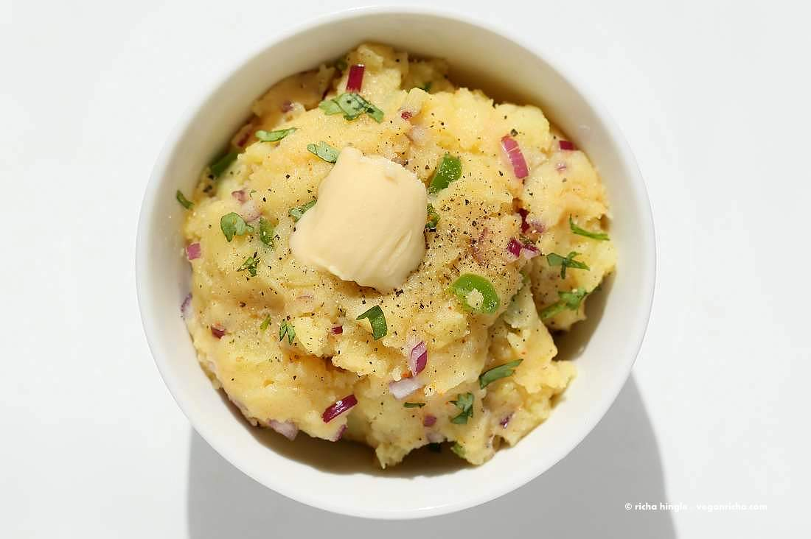

Aloo Bharta

Ingredients
3 medium potatoes yukon gold or red
1/4 cup (30 g) finely chopped chopped red onion
1 green chili finely chopped
1/2 tsp (0.5 tsp) coriander
1/4 tsp (0.25 tsp) or more cayenne/red chili powder
1/4 tsp (0.25 tsp) or more black pepper
1/2 tsp (0.5 tsp) or more salt to taste
a few Tbsp chopped cilantro or scallion
Steps: Aloo Bharta
1. Cook the potatoes. Boil, microwave or pressure cook(14 to 16 minutes) until well cooked.
2. Peel if desired and mash well until very smooth.
3. Peel if desired and mash well until very smooth.
4. Taste salt and spice. Serve warm topped with vegan butter or olive oil and black pepper.
Back to Homepage